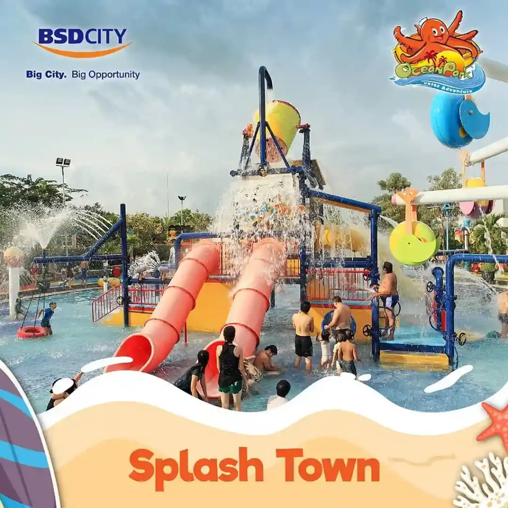

Ada wahana yang seru untuk anak-anak. Namanya adalah Splash Town! Di wahana ini, anak-anak bisa bermain air sepuasnya karena dilengkapi dengan berbagai macam permainan seru, seperti air mancur, perosotan mini, sampai dengan ember tumpah! Buat para orang tua juga nggak perlu khawatir sama kedalaman airnya, karena air di kolam ini termasuk dangkal. Jadi, aman banget untuk anak-anak di bawah umur 12 tahun. Apalagi, di Splash Town ini juga ada hiasan patung-patung hewan yang lucu dan berwarna-warni. Dijamin anak betah main di sini!
Flying Tower merupakan wahana perosotan air raksasa yang terbilang cukup baru di sini. Ada macam Flying Tower yang bisa kamu coba satu per satu, yaitu Giant Swing, Wave Splash, Stroom Scream, dan Shocking Quae. Di wahana ini kamu akan diajak meluncur di perosotan berbentuk pipa di atas ketinggian kurang lebih 13 meter. Nah, buat kamu yang suka perosotan ekstrim, mungkin bisa coba naik Stroom Scream yang bakal bikin kamu berteriak histeris!

Pacific Wave merupakan salah satu wahana paling populer dan utama di Ocean Park BSD City. wahana ini pada dasarnya merupakan kolam ombak, yaitu tempat kamu bisa merasakan serunya main ombak di kolam yang luas. Wahana yang satu ini dijamin akan memberikan pengalaman seru seperti terkena ombak di pantai. Pacific Wave memiliki ombak buatan yang akan datang setiap satu jam sekali dengan durasi 15 menit. Ombaknya juga cukup tinggi, yaitu sekitar 1,5 meter.

Kolam arus sepertinya udah jadi wahana wajib di setiap waterpark, termasuk juga di taman rekreasi air Tangerang yang satu ini. Di sini kolam arusnya bernama Caribbean River, di mana amu bisa bersantai di atas ban sambil mengikuti arus yang tenang. Kolam arus Caribbean River ini memiliki panjang kurang lebih 500 meter dan bentuknya yang mengelilingi berbagai macam wahana lain yang ada di waterpark ini. Wahana ini bakal cocok banget buat kamu yang nggak terlalu suka permainan air yang ekstrim!
Nggak cuma punya berbagai wahana air dan permainan modern yang banyak aja, Ocean Park BSD City juga dilengkapi dengan berbagai fasilitas. Fasilitas yang dimiliki waterpark ini tentu aja untuk menunjang kenyamanan bagi para pengunjung yang datang.
Nah, berikut ini adalah fasilitas Ocean Park!